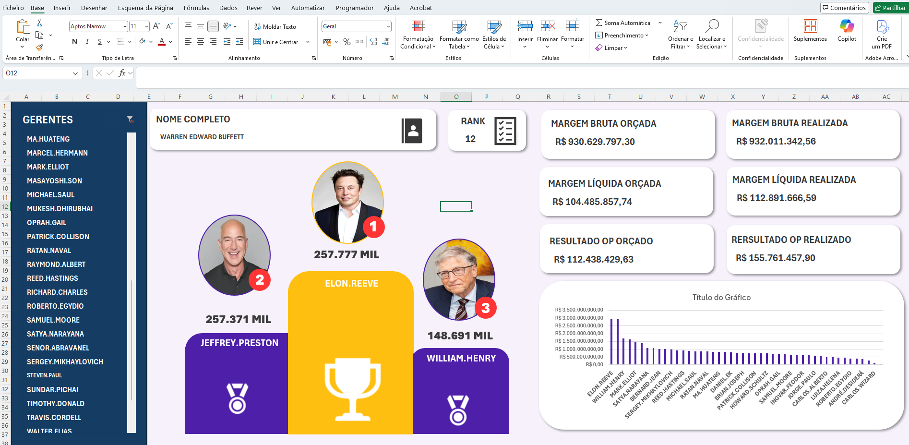

Nos últimos 30 dias me lancei em um desafio: criar dashboards fora do Power BI. Ao encontrar modelos avançados em Excel, percebi que a ferramenta permite ir muito além do básico quando aplicada a lógica correta de visualização.
Desenvolvi dashboards focados em clareza estratégica para meu diretor, priorizando a velocidade na leitura dos dados. Esse projeto reforçou minha crença de que não existem barreiras para uma boa visualização: com as ferramentas certas, entregamos valor real.